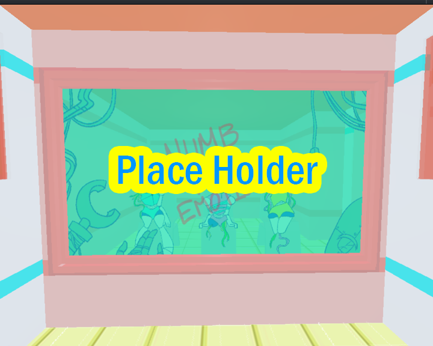
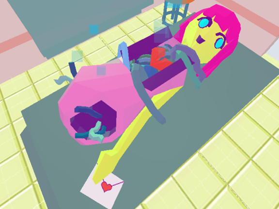
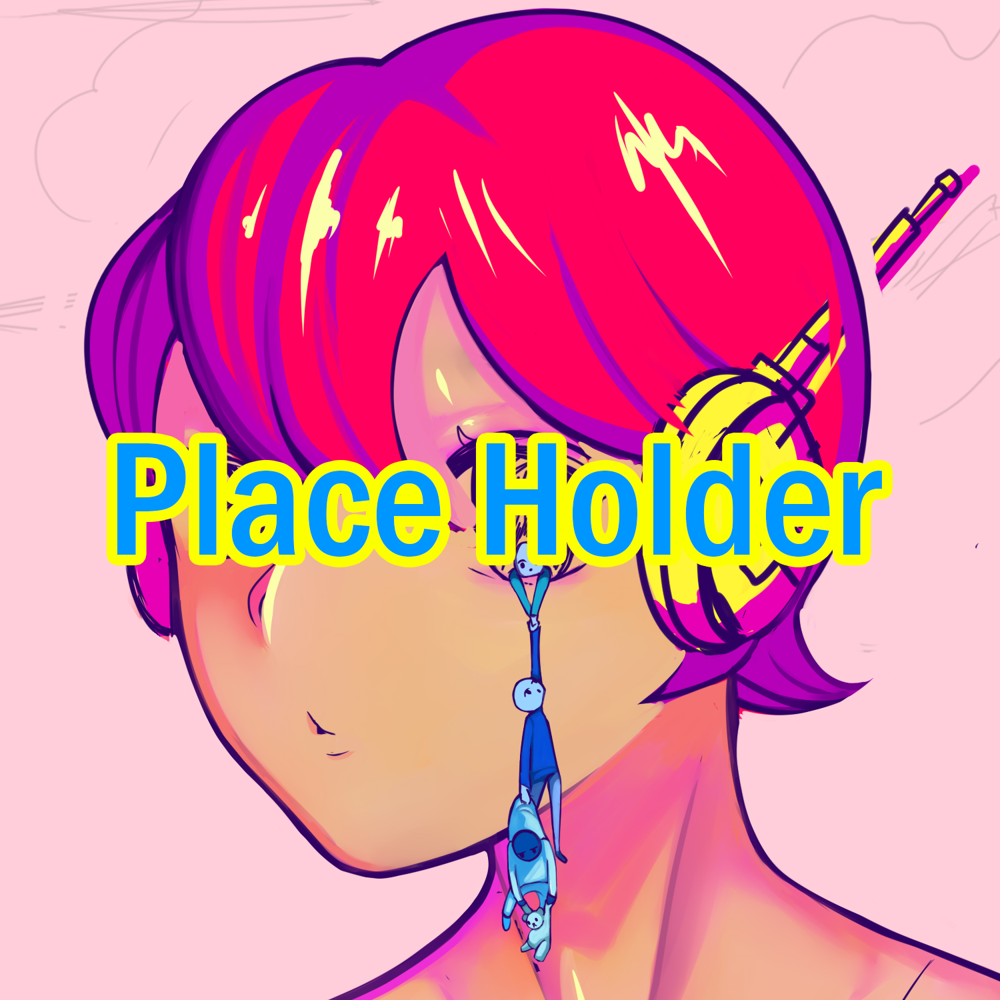
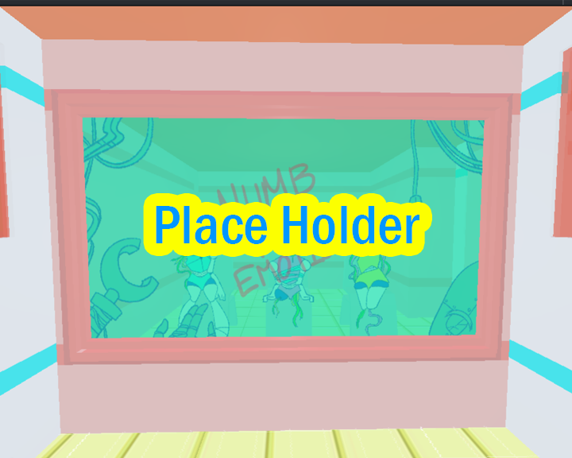
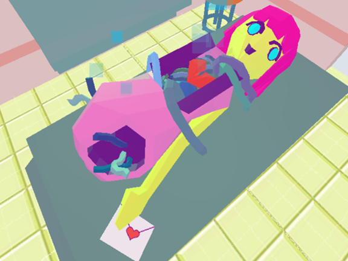
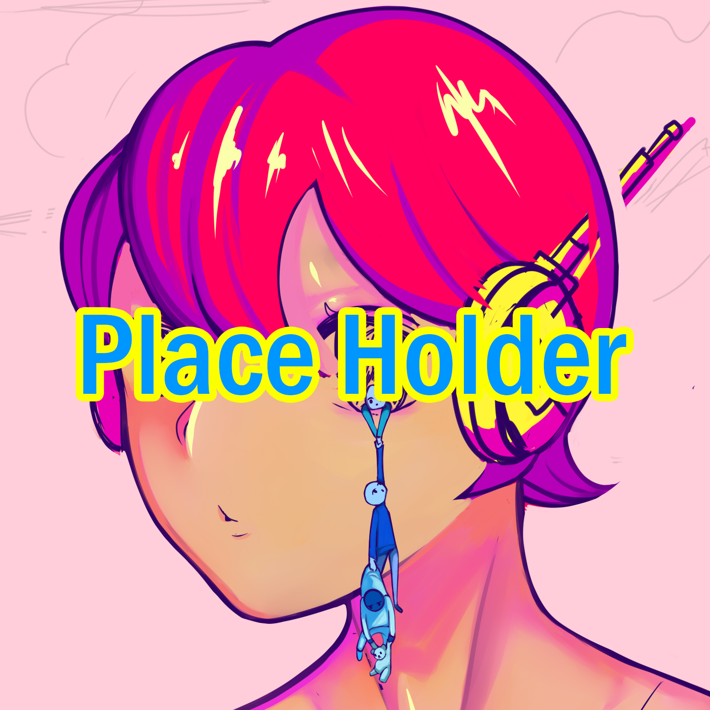

My artistic practice encompasses areas of graphic development
and editing software in digital media, as well as the inclusion of
traditional methods. Over the course of my career, I aimed to create
engaging artwork that educated and inspired the public by broadening
their views of different artistic styles and approaches. However,
on most occasions, my art is purely a form of self-expression or a
reflection of my past experiences. Through the manipulation of digital
methods, like illustration or 3D modeling in programs such as blender,
I construct pieces adorned in vibrant colors and fantastical imagery.
Digital art is one of the only ways I can manifest my creative mind
because it can only exist as a virtual piece. However, there are times
where I do prefer to experiment with traditional practices. “Wallflower”
was a physical sculpture that was created by combining new materials with
repurposed garbage, or damaged goods. It was a piece that symbolized the
unwanted attention aimed at one that experiences social anxiety. Another
work that dealt with a heavy topic was “Identity Monster” – an exploration
of the life of a queer individual experiencing gender dysphoria and
identity crises. It acted as both a spatial and digital piece as it was
a series of photoshopped images of a miniature diorama I made. Creating
such work all become very personal to me as I try to incorporate some
details of my own issues or life in every piece. This way, a small part
of me lives in my artwork and I can continue to exist even when I no
longer do.
As mentioned previously, I aim to educate and inspire my audience through
my artwork, and although my work is open to interpretation, every piece holds
a meaningful message that should be read. As artists, we have the ability to
move the masses with art, so why not fabricate the piece that can assist,
inspire, and change our everyday lives. During my educational pursuits, I aimed
to become an artist that could specialize in different disciplines so I can use
various programs and resources to freely express my creative mind. I then realized
the vast potential we students have specializing the field of digital media. As
a digital artist, you create something that only exists as a form of data; something
that is timeless, permanent, and can exist so long as technology never dies.
Artist Bio
Mary Dominguez is a digital media artist whose work revolves around
digital illustration, photo and video editing, and 3D modeling, as
well as more traditional practices like sculpting and mixed media.
Art for them is an outlet that fabricates the macabre, obscure
realities of the mind, often incorporating aesthetics that are
charming but chaotic in nature. Most pieces often deal with heavy
undertones that tie with social activism, mental health, and the
representation or identity of the human body. Recently in their career,
they’ve been experimenting with different themes such as futuristic
ideologies. With their educational background regarding transhumanism and
digital history, Dominguez aims to incorporate these new approaches
into their latest work.
 




